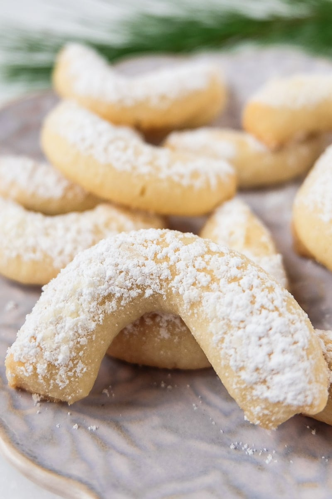
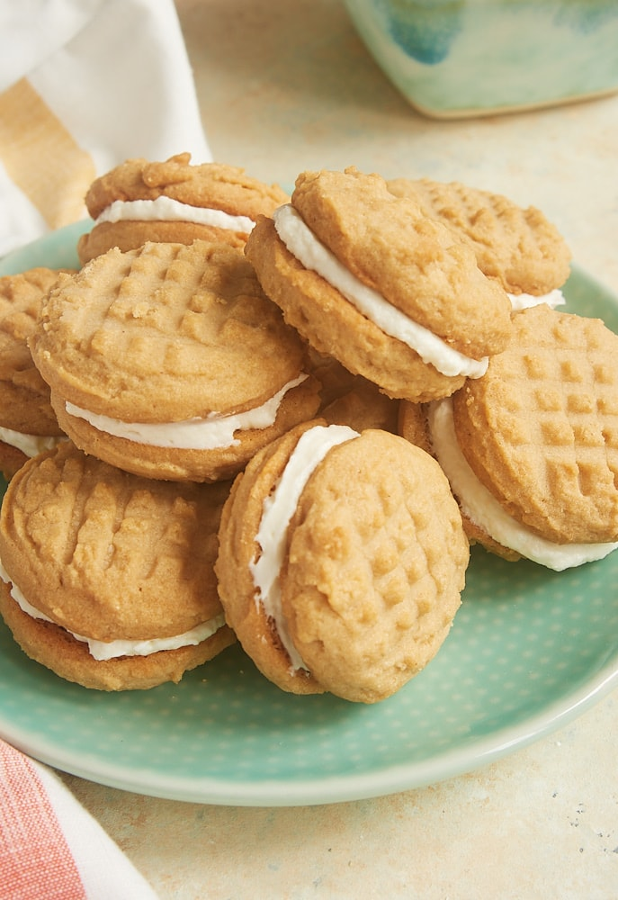
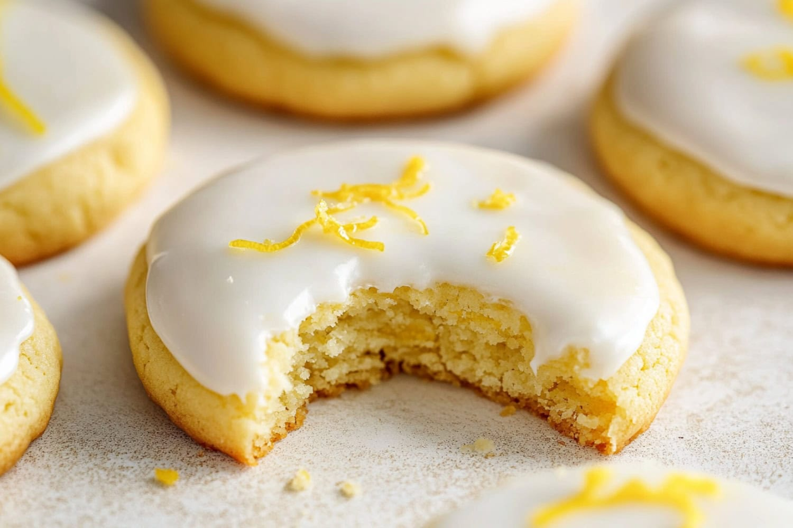
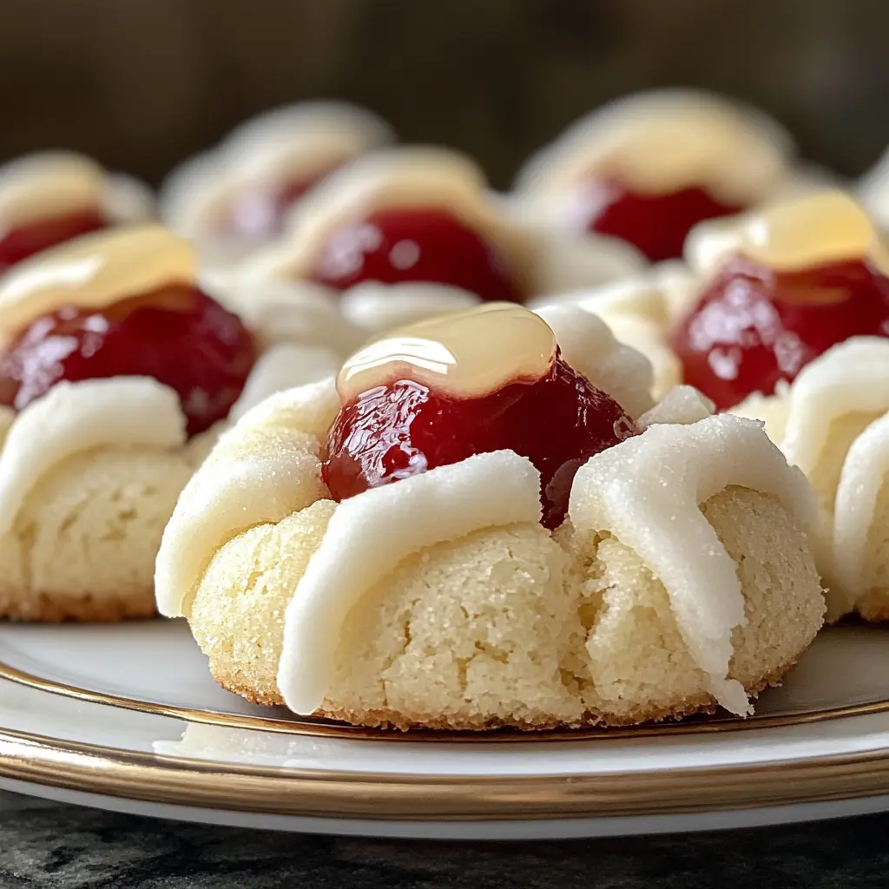

Popular Recipes 🍪

Chocolate Chip
Classic and mushy.

Peanut Butter
Chewy and sweet.

Vanilla Crescent
Soft and delicious.

Sandwich Cookie
Also known as Oreos.

Glazed Lemon
Eccentric taste.

Raspberry Thumbprint
Sweet and pretty.
Chocolate Chip Cookies
Ingredients
- 225 g butter (soft, room temperature)
- 200 g sugar
- 2 eggs
- 1 tsp vanilla extract
- 300 g wheat flour
- 1 tsp baking soda
- ½ tsp salt
- 200 g chocolate chips
Steps
- Preheat the oven to 180°C (top/bottom heat). Line a baking tray with baking paper.
- Put the soft butter and sugar into a large bowl and mix until the mixture is light and creamy.
- Add the eggs one at a time, mixing well after each egg. Then add the vanilla extract.
- In a separate bowl, mix the flour, baking soda, and salt together.
- Slowly add the dry ingredients to the butter mixture and mix until a smooth dough forms. Do not overmix.
- Gently fold the chocolate chips into the dough using a spoon.
- Scoop small portions of dough and place them on the baking tray, leaving space between each cookie.
- Bake for 10–12 minutes, until the edges are lightly golden but the centers are still soft.
- Let the cookies cool on the tray for a few minutes, then transfer them to a wire rack to cool completely.
Peanut Butter Cookies
Ingredients
- 200 g peanut butter (creamy)
- 150 g sugar
- 1 egg
- 1 tsp vanilla extract
- ½ tsp baking soda
- Pinch of salt
Steps
- Preheat the oven to 180°C (top/bottom heat). Line a baking tray with baking paper.
- Put the peanut butter and sugar into a bowl and mix until smooth and well combined.
- Add the egg and vanilla extract, then mix until a thick, even dough forms.
- Add the baking soda and salt and mix briefly to combine.
- Roll the dough into small balls and place them on the baking tray, leaving space between each cookie.
- Flatten each dough ball slightly using a fork to create a crisscross pattern on top.
- Bake for 8–10 minutes, until the edges are set but the centers are still soft.
- Remove from the oven and let the cookies cool on the tray for a few minutes before transferring them to a wire rack.
Vanilla Crescent Cookies
Ingredients
- 250 g wheat flour
- 200 g butter (cold, cut into small pieces)
- 100 g ground almonds
- 80 g powdered sugar
- 1 tsp vanilla sugar
- Extra powdered sugar for coating
Steps
- Preheat the oven to 170 °C (top/bottom heat). Line a baking tray with baking paper.
- Put the flour, ground almonds, powdered sugar, and vanilla sugar into a large bowl and mix briefly.
- Add the cold butter pieces and knead everything together quickly until a smooth dough forms. Do not overwork the dough.
- Take small portions of dough and roll them into thin logs. Shape each log into a crescent.
- Place the crescents on the baking tray, leaving a little space between each cookie.
- Bake for 12–15 minutes, until the cookies are set but still pale and not browned.
- Let the cookies cool for 1–2 minutes, then carefully roll them in powdered sugar while they are still warm.
- Allow the cookies to cool completely before serving or storing.
Sandwich Cookies
Ingredients
- 200 g butter (soft, room temperature)
- 150 g sugar
- 1 egg
- 1 tsp vanilla extract
- 300 g wheat flour
- ½ tsp baking powder
- Pinch of salt
Filling
- 100 g butter (soft)
- 150 g powdered sugar
- 1 tsp vanilla extract
Steps
- Preheat the oven to 180 °C (top/bottom heat). Line a baking tray with baking paper.
- Put the soft butter and sugar into a bowl and mix until light and creamy.
- Add the egg and vanilla extract and mix until well combined.
- In a separate bowl, mix the flour, baking powder, and salt together.
- Gradually add the dry ingredients to the butter mixture and mix until a smooth dough forms.
- Roll out the dough on a lightly floured surface to about 3–4 mm thickness and cut out small circles.
- Place the cookies on the baking tray and bake for 8–10 minutes, until lightly golden at the edges.
- Let the cookies cool completely before filling.
- For the filling, beat the soft butter with powdered sugar and vanilla extract until smooth and creamy.
- Spread a small amount of filling onto the flat side of one cookie and place another cookie on top to form a sandwich.
Glazed Lemon Cookies
Ingredients
- 150 g butter (soft, room temperature)
- 180 g sugar
- 1 egg
- Zest of 1 lemon
- 2 tbsp lemon juice
- 280 g wheat flour
- 1 tsp baking powder
- Pinch of salt
Glaze
- 150 g powdered sugar
- 2–3 tbsp lemon juice
Steps
- Preheat the oven to 180 °C (top/bottom heat). Line a baking tray with baking paper.
- Put the soft butter and sugar into a bowl and mix until light and creamy.
- Add the egg, lemon zest, and lemon juice and mix until well combined.
- In a separate bowl, mix the flour, baking powder, and salt together.
- Gradually add the dry ingredients to the butter mixture and mix until a smooth dough forms.
- Scoop small portions of dough and place them on the baking tray, leaving space between each cookie.
- Bake for 10–12 minutes, until the edges are lightly golden.
- Let the cookies cool completely before glazing.
- For the glaze, mix the powdered sugar with lemon juice until smooth.
- Drizzle the glaze over the cooled cookies and allow it to set before serving.
Raspberry Thumbprint Cookies
Ingredients
- 200 g butter (soft, room temperature)
- 120 g sugar
- 1 egg yolk
- 1 tsp vanilla extract
- 280 g wheat flour
- Pinch of salt
- Raspberry jam
Steps
- Preheat the oven to 180 °C (top/bottom heat). Line a baking tray with baking paper.
- Put the soft butter and sugar into a bowl and mix until light and creamy.
- Add the egg yolk and vanilla extract and mix until well combined.
- Add the flour and salt and mix until a smooth dough forms.
- Roll the dough into small balls and place them on the baking tray, leaving space between each cookie.
- Use your thumb or the back of a spoon to press a small indentation into the center of each cookie.
- Fill each indentation with a small amount of raspberry jam.
- Bake for 12–14 minutes, until the cookies are lightly golden at the edges.
- Let the cookies cool on the tray for a few minutes, then transfer them to a wire rack to cool completely.